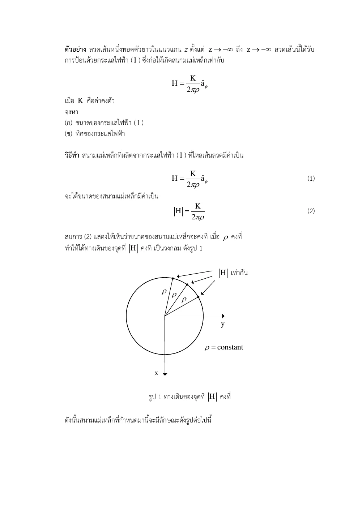
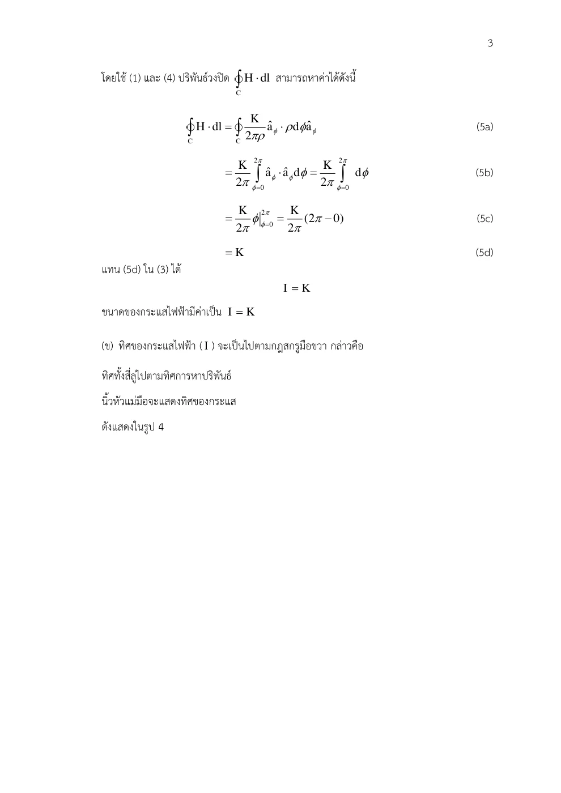

01 กฎทั่วไปและทิศวง
∮CH • dl=Ienc=∫SJ • ds
เหตุใดจึงแปลงรูปเช่นนี้? ปกติผิวกับทิศเดินวงต้องจับคู่ด้วยมือขวา และใช้รูปนี้เฉพาะแม่เหล็กสถิต
Ampère’s Circuital Law · Hayt §7.2; Sadiku §7.4
ถ้ารู้ว่ากระแสและรูปร่างมีสมมาตร จะหาสนามวนโดยไม่อินทิเกรตทุกชิ้นลวดได้อย่างไร?
แอมแปร์วัดยอดการวนของ H รอบวง แล้วเทียบกับกระแสที่แทงผ่านผิวภายในวง การวนเป็นการสะสมส่วนสัมผัสตลอดทาง ไม่ใช่ดูสนามที่จุดเดียว กฎจริงทุกวงในแม่เหล็กสถิต แต่หา H ง่ายเมื่อสมมาตรทำให้ขนาดคงที่ตามวง
ในลวดตันกระแสสม่ำเสมอ วงเล็กภายในล้อมกระแสเพียงสัดส่วนพื้นที่ จึง H เพิ่มตามรัศมี ภายนอกล้อมกระแสครบแล้ว แต่เส้นรอบวงโตขึ้น H จึงลดตามรัศมี สนามต่อเนื่องที่ผิวในแบบจำลองนี้
ขอบเขตแบบจำลอง: แม่เหล็กสถิต ลวดอนันต์ J สม่ำเสมอ ไม่มีผล skin หรือ proximity
เหตุใดจึงแปลงรูปเช่นนี้? ปกติผิวกับทิศเดินวงต้องจับคู่ด้วยมือขวา และใช้รูปนี้เฉพาะแม่เหล็กสถิต
เหตุใดจึงแปลงรูปเช่นนี้? วงกลมร่วมแกนทำให้สนามสัมผัสวงและขนาดไม่ขึ้นกับ ϕ จึงดึง Hϕ ออกได้
เหตุใดจึงแปลงรูปเช่นนี้? ฐานเดียวกัน dot เท่ากับหนึ่ง แล้วประเมิน [ϕ] จาก 0 ถึง 2π
เหตุใดจึงแปลงรูปเช่นนี้? a เป็นรัศมีลวดจริง แยกจาก ρ ที่เป็นรัศมีวงทดลอง
เหตุใดจึงแปลงรูปเช่นนี้? ใช้พื้นที่หน้าตัดที่วงล้อมจริง ไม่แทน I รวมเมื่อยังอยู่ในลวด
เหตุใดจึงแปลงรูปเช่นนี้? ภายในกระแสโตตาม ρ² หารเส้นรอบวงตาม ρ จึงเหลือเพิ่มตาม ρ ภายนอกกระแสคงที่
เหตุใดจึงแปลงรูปเช่นนี้? ตรวจความต่อเนื่องและไม่เกิดเอกฐานในลวดตัน ต่างจากแบบจำลองเส้นลวดที่ไม่มีรัศมี
เหตุใดจึงแปลงรูปเช่นนี้? สองป้ายในไฟล์เป็นตัวอย่างเดียวกัน K หน่วย A ถ้า K บวกกระแสตาม +z ถ้าลบตาม −z
เขียนสูตรทั่วไป → ระบุพิกัดและทิศ → วิเคราะห์ด้วยมือ → ใช้ขอบเขต → ตรวจหน่วย SI และความหมาย
ลวดตันและบัสบาร์แสดงการกระจาย H ภายในกับภายนอก จุดสูงสุดในแบบจำลองสม่ำเสมออยู่ที่ผิว เมื่อความถี่สูง skin effect ทำให้ J ไม่สม่ำเสมอและต้องเปลี่ยนแบบจำลอง
แกนวงแหวนในเครื่องจักรและหม้อแปลงใช้วงตามสมมาตรเพื่อเชื่อมแอมแปร์กับแรงแม่เหล็ก NI แต่การประมาณสนามคงที่ตามแกนต้องตรวจช่องอากาศและรูปทรงจริง
ลองอธิบายด้วยคำของตนเอง: เพราะเหตุใดสูตรนอกลวดที่มี 1/ρ จึงใช้ถึง ρ=0 ไม่ได้ในตัวนำตัน?
ลากจุดสังเกตจากกลางตัวนำออกไปนอกผิว ทำนาย H เพิ่มเชิงเส้นข้างในแล้วลดแบบ 1/ρ ข้างนอก
ก่อนปรับ: ทำนายทิศและขนาด · หลังปรับ: อธิบายด้วยสมการและเงื่อนไข
แนวคิดของบทนี้เป็นฐานให้ Set 17
เลขหน้าทั้งหมดนับหน้า PDF รวมปก ตำราเป็นแหล่งตรวจวิธีและนิยาม ไม่ได้กล่าวว่าข้อมูลทุกตัวอย่างตรงกับข้อสอบ บทอธิบายและการพิสูจน์ด้านบนเรียบเรียงเพื่อการสอน
กฎแอมแปร์เชื่อมการวนของสนามรอบเส้นปิดกับกระแสที่ทะลุผิวซึ่งเส้นนั้นล้อมอยู่ กฎใช้ได้ทั่วไปในแม่เหล็กสถิต แต่การดึง H ออกนอกอินทิกรัลต้องมีสมมาตรเพียงพอ
อ่าน สไลด์หลัก · หน้า PDF 1 ควบคู่กับคำอธิบายด้านล่าง เพื่อเทียบรูปและลำดับสมการ
ใช้กระแสที่วงปิดล้อมจริง ไม่ใช่กระแสทั้งลวดเสมอ เมื่ออยู่ภายในลวดที่ J สม่ำเสมอ Ienc แปรตาม ρ² วงที่สวนทิศมือขวาจะให้เครื่องหมายกระแสตรงข้าม
วงกลมในสนามลวดยาวที่มีสมมาตรหมุนมี Hϕ คงที่และขนานส่วนความยาว จึงได้
ลวดตันรัศมี a ที่ J สม่ำเสมอ ภายในมี Ienc = Iρ²/a² จึงได้ Hϕ = Iρ/(2πa²) ภายนอกมี Ienc = I จึงได้ Hϕ = I/(2πρ) ที่ ρ=a ทั้งสองคำตอบต่อเนื่อง ต้องมีสมมาตรก่อนดึงสนามออกนอกอินทิกรัล
| สัญลักษณ์ | ความหมาย / คำอ่าน | SI |
|---|---|---|
| Ienc | กระแสสุทธิทะลุผิวตามทิศปกติ | A |
| Hϕ | องค์ประกอบแม่เหล็กตามวงกลม | A/m |
| ρ | รัศมีวงแอมแปร์ | m |
แสดง 4 หน้า
แต่ละรายการเรียบเรียงภาษาไทย พร้อมภาพต้นฉบับหน้าเดียวกัน ภาพคงรูปเวกเตอร์และลำดับการพิสูจน์ของอาจารย์ เปิดเฉพาะหน้าที่ต้องการอ่าน
| สัญลักษณ์ | คำอ่านและความหมาย | SI |
|---|---|---|
| x,y,z; r,ρ; θ,ϕ | เอ็กซ์ วาย แซด; อาร์ โร; ทีตา ไฟ · พิกัดและมุม | m; m; rad |
| E, D; H, B | อี ดี; เอช บี · สนามและฟลักซ์ไฟฟ้า/แม่เหล็ก | V/m, C/m²; A/m, T |
| J, K; ρv, ρs | เจ เค; โรซับวี โรซับเอส · กระแสปริมาตร/ผิวและประจุปริมาตร/ผิว | A/m², A/m; C/m³, C/m² |
| ε, μ, σ; εr, μr | เอปไซลอน มิว ซิกมา · สภาพยอม ความซาบซึมได้ สภาพนำ; ค่าสัมพัทธ์ | F/m, H/m, S/m; ไม่มีหน่วย |
| P, χe | พี ไคซับอี · โพลาไรเซชันและความไวทางไฟฟ้า | C/m², ไม่มีหน่วย |
| I, Q, q; V, V0 | ไอ คิว คิว; วี วีซับศูนย์ · กระแส ประจุรวม/ย่อย ศักย์/แรงดันกำหนด | A, C, C; V, V |
| C, W; S, A; d,L | ซี ดับเบิลยู; เอส เอ; ดี แอล · ความจุ พลังงาน พื้นที่ ระยะห่าง ความยาว | F, J; m², m²; m,m |
| A, Φ | เอ ไฟตัวใหญ่ · ศักย์เวกเตอร์แม่เหล็กและฟลักซ์ | Wb/m, Wb |
| ω, f, λ; k, η | โอเมกา เอฟ แลมบ์ดา; เค อีตา · ความถี่เชิงมุม ความถี่ ความยาวคลื่น เลขคลื่น อิมพีแดนซ์ | rad/s, Hz, m; rad/m, Ω |
| v, t; dl, ds, dv | วี ที; ดีแอล ดีเอส ดีวี · ความเร็ว เวลา ส่วนย่อยความยาว ผิว ปริมาตร | m/s, s; m,m²,m³ |
| an, j; ∇, ∇2 | เอซับเอ็น เจ; เดล ลาปลาเซียน · เวกเตอร์หน่วย หน่วยจินตภาพ ตัวดำเนินการพื้นที่ | ไม่มีหน่วย; ต่อระยะทางและระยะทาง² |
| Es, Hs | อีซับเอส เอชซับเอส · เฟสเซอร์เชิงอวกาศ | V/m, A/m |
องค์ประกอบสนามมีหน่วยเดียวกับสนาม ตัวห้อย t,n คือสัมผัสและปกติ ตัวห้อย 1,2 คือตัวกลาง ไพรม์ระบุแหล่งกำเนิด a ที่เป็นค่าคงตัวจากการอินทิเกรตมีหน่วยตามสมการที่ใช้; a ที่เป็นเวกเตอร์หน่วยไม่มีหน่วย
ลวดยาวอนันต์บนแกน z ให้ H = K2πρaϕ A/m โดย K เป็นค่าคงตัวหน่วย A จงอธิบายสมมาตร เลือกวงแอมแปร์และเขียนสูตรตั้งต้นเพื่อหาขนาดและทิศกระแส (อินทิเกรตต่อใน ALL-Q06)
ALL-Q05 · ตั้งวงแอมแปร์ · เรียบเรียงจากไฟล์จริง · Set 16 · หน้า PDF 1 · ชุดโจทย์เดิม · หน้า PDF 19 · Hayt §7.2 · หน้า PDF 202
ทำไมจึงทำขั้นนี้? แม่เหล็กสถิตและทิศวงกับปกติสัมพันธ์ตามมือขวา
ทำไมจึงทำขั้นนี้? เมื่อปกติ +z กระแสผ่านผิวตาม +z ถูกนับบวก กฎมือขวาผูกทิศทั้งสอง
ทำไมจึงทำขั้นนี้? ลวดอนันต์ร่วมแกนทำให้ขนาด H คงที่ทุกจุดบนวงรัศมีเดียวกัน กฎนี้ไม่ได้ให้ H คงที่บนทุกวง
ทำไมจึงทำขั้นนี้? สนามสัมผัสวงและคงที่ตามมุม ตั้งปริพันธ์ไว้แล้วส่งต่อไปขั้นต่อเนื่อง
ใช้สนาม H=K2πρaϕ A/m และวงจาก ALL-Q05 จงหาขนาดและทิศของกระแสตามการเดินทวนเข็มเมื่อมองจาก +z ข้อนี้คือหน้าต่อเนื่องของตัวอย่างเดียวกัน
ALL-Q06 · หน้าต่อเนื่อง ALL-Q05 · เรียบเรียงจากไฟล์จริง · ALL-Q06 · หน้าต่อเนื่อง · หน้า PDF 20 · Set 16 · ตั้งวงและทิศ · หน้า PDF 2 · Hayt §7.2 · หน้า PDF 202
ทำไมจึงทำขั้นนี้? แม้ต่อจากข้อก่อน ต้องเขียนกฎทั่วไปให้ผู้ตรวจเห็น
ทำไมจึงทำขั้นนี้? รัศมีจาก H หักล้างรัศมีจากส่วนโค้ง ไม่เหลือ dependence ตามวงที่เลือก
ทำไมจึงทำขั้นนี้? ปกติ +az และวงทวนเข็มให้กระแสผ่านผิวบวกตามมือขวา
ทำไมจึงทำขั้นนี้? ต้นฉบับใช้ K ซึ่งเป็นสเกลาร์ค่าคงตัว อย่าสับสนกับเวกเตอร์กระแสผิว K หน่วย A/m
เลื่อนพารามิเตอร์เพื่อดูแนวโน้มและเครื่องหมาย แล้วกลับไปพิสูจน์ด้วยสูตรตั้งต้นในตัวอย่าง
ตัวอย่างเพิ่มเติม โน้ต และภาพลายมือแสดงเป็นหน้าต้นฉบับเรียงลำดับ ใช้คำอธิบายและวิธีทำในบทนี้ประกอบ
เริ่มจากกฎแอมแปร์กับสนามที่แปรตาม 1/ρ

อินทิเกรตมุม 0 ถึง 2π พร้อมประเมินขอบเขต
